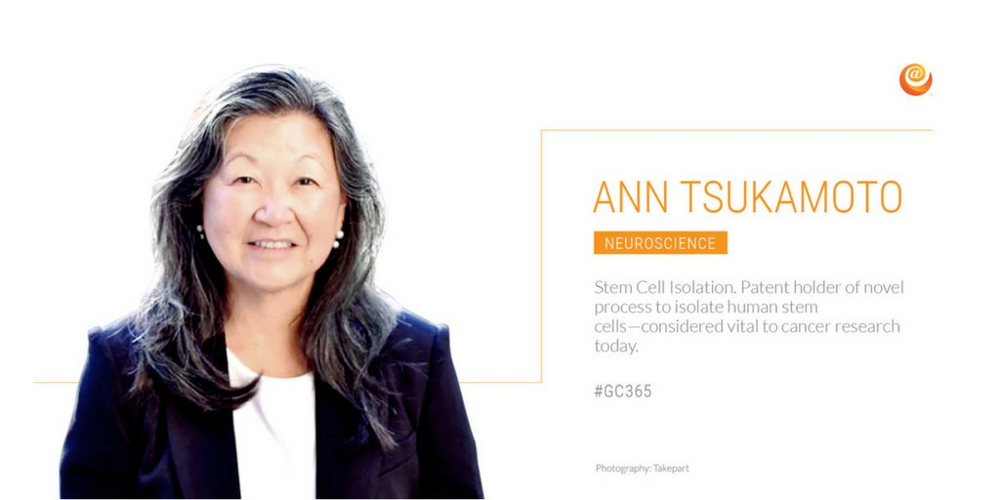

Biography

Ann Tsukamoto, Executive Vice President of Scientific and Strategic Alliances, was an undergraduate at UC San Diego. She reviewed 3 PhD at UCLA and her postdoctoral research with Harold Varmus at US+CSF. From around 1989-1997 she joined a biotech company called SyStemix. There she was involved with isolation of the hematopoietic stem cell. Later, in 1998 she going StemCells Inc. , here she had held several leadership roles as she oversaw isolation and application of human neural and liver stem cells applying to many diseases.
Stem Cell Summary
Stem cells have two important characteristics that make it easy to tell the difference in the types of cells. The U.S. National Institute of Health tells us that they are first unspecialized cells that renew themselves for long periods through cell division. Another is that under certain physiologic or experimental conditions, they can be induced to become cells with special functions such as beating cells of the heart or the insulin producing cells of the pancreas. A stem cell is an undifferentiated cell of a multicellular organism that is capable of giving rise to indefinitely more cells of the same type, and from which certain other kinds of cell arise by differentiation.